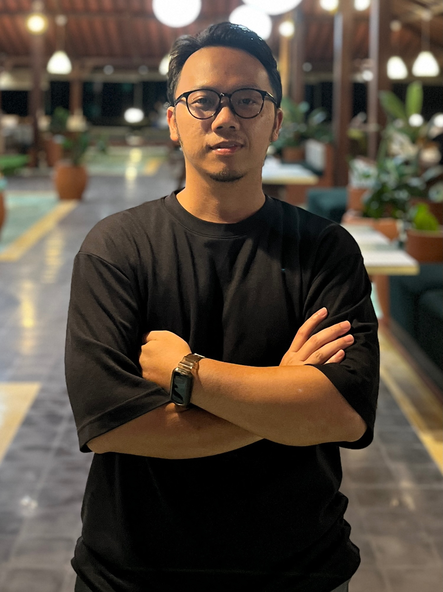

Aris Suharyadi, S.Pd., M.Pd.
Dosen Departemen Administrasi Pendidikan, Universitas Negeri Yogyakarta
arisuharyadi@uny.ac.id · arisuharyadi.github.io · SINTA: sinta.kemdiktisaintek.go.id/authors/profile/6691529
Aris Suharyadi, S.Pd., M.Pd.
Dosen Departemen Administrasi Pendidikan, Universitas Negeri Yogyakarta
Meneliti resiliensi kepala sekolah, manajemen sekolah dasar, dan evaluasi program pendidikan. Halaman ini merangkum kinerja saya dari tahun ke tahun sejak 2019.
Lihat portofolioProfil SINTA
Portofolio kinerja
Urut dari tahun terbaru ke 2019. Pilih kategori untuk menyaring.
Latar belakang
Pendidikan
- S3 Manajemen Pendidikan, Universitas Negeri Yogyakarta (sedang menempuh)
- S2 Manajemen Pendidikan, Universitas Negeri Yogyakarta, 2013
- S1 Administrasi Pendidikan, Universitas Negeri Yogyakarta, 2012
Sertifikasi dan pelatihan
- Pelatihan AI Microsoft Elevate: Desain Pembelajaran Abad ke-21 (16 JP), Microsoft Indonesia, 2026
- Sertifikat Pendidik (Dosen), 2025
- Pelatihan Pendidikan Jarak Jauh, SEAMOLEC, 2024
- Sertifikat Kewirausahaan, 2024
Pelayanan akademik
- Narasumber Pembinaan Soft Skills bagi mahasiswa baru UNY jalur Seleksi Mandiri, 2025
- Anggota panitia KONASPI, UNESA, 2024
- Anggota Pusat Data dan Informasi Fakultas, UNY, 2024
- Panitia FIP-JIP, UNY, 2023
- Anggota Tim Penjaminan Mutu Fakultas, UNY, 2020
Kontak
Untuk kolaborasi riset, undangan narasumber, atau pertanyaan seputar bimbingan.